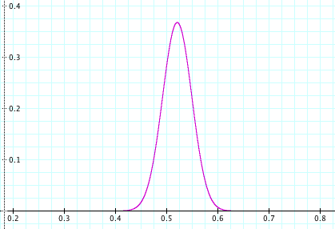
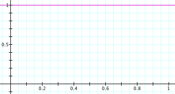
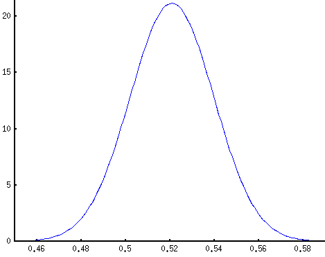
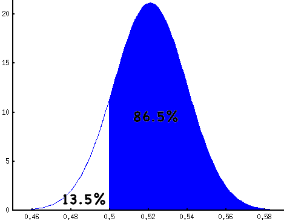

09.25.08
How to Read Polls
On September 15, SurveyUSA released this poll of likely voters in Virginia:
McCain (R) 46%
Obama (D) 50%
Margin of Error: +/-3.7%
Tables like this appear on TV and in newspapers all the time. But they’re never accompanied by any explanation of how to interpret the margin of error. Commentators usually interpret it in one of two ways:
- Obama is ahead by more than the margin of error, hence his lead is statistically significant.
- That “+/-” means either number could be off by that amount. If you added 3.7% to McCain’s 46% and subtracted 3.7% from Obama’s 50%, McCain would actually be ahead. So Obama’s lead is not statistically significant; it is less than twice the margin of error.
In either case, they are wrong.
So what’s the right way to interpret the margin of error? A lead is significant if it is 1.6 times the margin of error or greater. That’s 5.9% for our poll, so Obama’s lead is not significant.
This is a strange, non-intuitive rule, which explains why commentators don’t use it. The derivation is more revealing than the rule itself.
Obama’s lead is “statistically significant” if there’s a 95% probability that Obama is actually ahead. The “95%” is completely arbitrary, but the probability
P(Obama ahead)
is quite interesting. I wish news organizations would report this probability instead of the margin of error. It’s easier to interpret the statement “There’s an 86.5% chance that Obama is ahead” than a statement about margins of error.
These margins of error, incidentally, are just one over the square root of the sample size. For the poll described above, there were 732 voters surveyed. The square root of 732 is 27 and one over that is .03696 or 3.7%. The reported margin of error is not a standard deviation.
The probability that Obama is ahead can be determined using Bayes' Rule, which quantifies the effect of evidence on our belief in a hypothesis. It relates a Hypothesis (H) and an Observation (O):
H = Obama is ahead of McCain.
O = In a poll of 732 likely voters, 50% preferred Obama and 46% preferred McCain.
Here it is:
Bayes’ Rule: P(H|O) = P(O|H)/P(O) * P(H)
This rule is important enough that each of these quantities has a name:
- P(H) is the prior probability, our belief that the hypothesis is true before seeing additional evidence.
- P(O|H) is the likelihood function, the probability of seeing the evidence if the hypothesis were true.
- P(O) is the marginal probablity, the probablity of seeing the evidence at all. It’s often thought of as a normalizing term.
- P(H|O) is the posterior probability. It’s what we’re really after, the likelihood of the hypothesis in light of new evidence.
Let’s start with the likelihood function, P(O|H). What are the odds of seeing this survey is a certain portion p of voters prefer Obama? It follows from the binomial formula:
pO = portion of voters preferring Obama
pM = portion of voters preferring McCain
a = pO * N (number of voters who prefer Obama)
b = pM * N (number of voters who prefer McCain)
N = a + b (total decided voters)
P(O|H) = B(a, b) = N! / (a! b!) * pO^a (1-pO)^b

This is a binomial distribution over pO. Notice that we’re only considering the two-way vote here, the 96% of the electorate that prefers either McCain or Obama.
To aid in the application of Bayes’ Rule, statisticians have developed the notion of a conjugate prior. The conjugate prior for the binomial distribution is the beta distribution. This means that, if our likelihood function is a binomial distribution, we can choose a beta distribution for our prior probability and get another beta distribution for the posterior probability.
In this case, it’s simplest to assume a uniform distribution for Obama’s portion of the vote. In other words, it’s equally probable that he’ll get 1% of the vote as it is that he’ll get 50% or 99% of it. Mathematically, if pO is the portion of voters who prefer Obama, then
pO ~ U(0, 1) = B(1, 1)

Bayes’ rule then gives the following distribution for pO after observing the poll:
pO’ ~ B(a + 1, b + 1) = B(pO * N + 1, pM * N + 1)

This is concentrated in a small region (note the x-axis) around 50 / (50 + 46) = 52.1%, Obama’s fraction of the two-way vote. The probability that Obama is ahead is the portion of mass to the right of pO’ = 50%:

This fraction is calculated numerically using an integral. It’s an important enough quantity to have a name, but not important enough to have a short, catchy name. It’s the regularized incomplete beta function,
P(Obama ahead) = I0.5(b, a) = I0.5(732 * 0.46, 732 * 0.50)
It can be calculated using a program like Mathematica or Octave, or by using an online calculator.
Another way of formulating this is to ask, “what is the fraction Δ by which a candidate must lead in a poll to have a 95% chance of really being ahead?” For a small sample, Δ will be large. For a large sample it will be small.
In a survey of N voters, a candidate with a lead of Δ can claim his chance of leading is:
P(leading) = I0.5(N*(0.5-Δ), N*(0.5+Δ))
By inverting the regularized incomplete beta function, one can calculate what lead is necessary for 95% confidence. But that’s hard. Here’s a table to make things simpler:
| N | MoE | Δ | Δ/MoE |
|---|---|---|---|
| 100 | 10.0% | 16.36% | 1.6362 |
| 200 | 7.07% | 11.60% | 1.6402 |
| 500 | 4.47% | 7.35% | 1.6431 |
| 1000 | 3.16% | 5.20% | 1.6438 |
| 1500 | 2.58% | 4.25% | 1.6443 |
| 2000 | 2.24% | 3.68% | 1.6444 |
| 2500 | 2.00% | 3.29% | 1.6445 |
| 3000 | 1.83% | 3.00% | 1.6445 |
The ratio Δ/MoE; quickly approaches a constant, somewhere around 1.644. Hence the rule I mentioned at the beginning of the post. If a candidate is ahead by more than about 1.6 times the sampling error, that corresponds to 95% confidence. If the lead is equal to the sampling error, this corresponds to about 85% confidence. A lead of half the sampling error corresponds to about 70% confidence.
Matt Rosencrantz said,
September 25, 2008 at 9:54 pm
I found this podcast:
http://www.econtalk.org/archives/2008/07/rivers_on_polli.html
fascinating on why these margins of error systematically underestimate the true uncertainty. Of course I don’t know anything about the particular poll you are pointing too, but if what this speaker says is true, sloppy statistics are pretty pervasive. In particular the part about not adjusting error calculations for sample re-weighting.
danvk said,
September 26, 2008 at 11:05 am
That’s a really interesting podcast. I wonder what the real margin of error would look like on one of these polls.
I figured out where the 1.644 was coming from. It’s equal to
sqrt(2) * erfinv(2*0.95 – 1) = 1.64485
Plug in values other than 0.95 to get other confidence levels.
starwed said,
September 28, 2008 at 12:11 am
I believe you made an error here…
The margin of error depends not only on the sample size, but also the recorded result: Margin of error
danvk said,
September 28, 2008 at 12:32 pm
That would be true if the pollsters reported a standard deviation, the formula for which is:
sigma = sqrt(p * (1-p) / N)
But what they’re really reporting is 1/sqrt(N). Whether that quantity should be referred to as a “margin of error” is mostly semantics. It’s the quantity that’s reported, so it’s the quantity I based my calculations on.
Spencer said,
November 26, 2008 at 1:46 pm
Wow, I found this fascinating! Great explanation. Who knew that statistics could be manipulated in so many ways… (hint of sarcasm)